Sprint 3
Dominis
Els dominis son estructures organitzatives utilitzades per gestionar usuaris, recursos i politiques en una xarxa informatica.
Usualment aquestes estructures parteixen desde un servidor central on tots els equips estan adherits al domini.
Els dominis mes utilitzats son:
- Active Directory Domain Services (AD DS): Windows
- OpenLDAP: Linux i Windows
- Samba: Linux
- Azure Active Directory: Windows i Linux
- Kerberos: Linux i Windows
LDAP
Instalacio i configuracio del domini al servidor
Configuracio del entorn
Primer configurarem el SO per a poder fer una instalacio mes agradable de LDAP.
Configurarem una IP estatica al servidor i comprovem que tinguessim connexio a internet.
Seguidament comprovem que al seguent fitxer tinguessim el nom del equip ben configurat. Si es vol canviar es necessari reiniciar el equip.
/etc/hostname
En el seguent fitxer, afegirem una linea amb la IP del equip, hostname, el nom del domini que es creara i una altra vegada el hostname.
/etc/hosts
10.0.2.8 [hostname].[nom del domini].[extensio del domini] [hostname]
Instalacio LDAP
Abans d'instalar actualitzem els repositoris.
(sudo) apt update
I instalarem els seguents paquets.
(sudo) apt install slapd ldap-utils
A l'instalar els paquets, s'obrira el configurador inicial de LDAP.
El primer pas escriurem la contrasenya que tindra el administrador.
I confirmarem la contrasenya.
Despres sortirem del configurador inicial.
Podrem comprovar amb la seguent comanda que, s'ha creat el domini de LDAP, sol que no esta del tot ben configurat.
(sudo) slapcat
Configuracio LDAP
Per a acabar de configurar el LDAP, haurem de utilitzar la seguent comanda:
(sudo) dpkg-reconfigure slapd
Note
Es pot repetir aquesta comanda per a reconfigurar el servidor tantes vegades necessaries, encara que no es recomanable utilitzar-lo en grans estructures.
No omitim la configuracio de LDAP.
Introduim el nom i l'extensio del domini abans afegit en /etc/hosts.
Introduim el nom de la organitzacio, que es el nom i l'extensio del domini.
Introduim la contrasenya del administrador, hauria de ser la mateixa abans afegida.
Confirmem la contrasenya.
Acceptem.
I acceptem borra la base de dades anterior. En aquest cas no hi ha res al ser la primera configuracio.
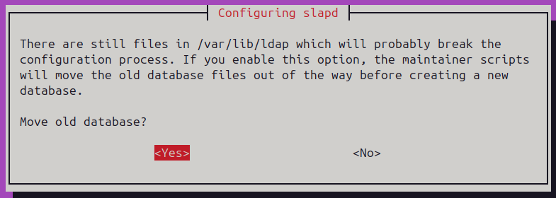
Ara si utilitzem la seguent comanda, podrem veure que tota la informacio esta correctament configurada.
Afegir estructures
La forma mes comuna de afegir estructura al nostre domini es mitjansant arxius de configuracio .ldif.
Podrem afegir la estructura al nostre domini mitjansant la seguent comanda:
(sudo) ldapadd -x -D "cn=[usuari administrador],dc=[nom de domini],dc=[nom de domini]" -W -f [fitxer.ldif]
Les opcions ficades indiquen el seguent: - x: activa l'autentificador simple ja que SASL no esta activat - D: especifica l'usuari que esta fent l'accio - W: demana la contrasenya de forma segura al no mostrarse en pantalla - f: especifica el fitxer de configuracio
Sempre es pot comprovar utilitzant la seguent comanda:
(sudo) slapcat
Warning
En les seguents arxius de configuracio no estan totes les opciones al ser una gran cuantitat.
Unitats organitzatives
Per crear UOs, haurem de seguir la seguent estructura:
dn: ou=[nom de la UO],dc=[nom de domin],dc=[nom de domini]
objectClass: organizationalUnit
objectClass: top
ou: [nom de la UO]
Usuaris
Per crear usuaris, haurem de seguir la seguent estructura:
dn: uid=[id usuari],ou=[UO que pertany],dc=[nom de domini],dc=[nom de domini]
objectClass: inetOrgPerson
objectClass: organizationalPerson
objectClass: person
objectClass: posixAccount
objectClass: shadowAccount
objectClass: top
userPassword: [contrasenya]
cn: [Nom]
gidNumber: [Numero de grup]
homeDirectory: [directori home]
loginShell: [shell]
sn: [Cognoms]
uidNumber: [numero identificador de usuari]
Grups
Per crear grups, haurem de seguir la seguent estructura:
dn: cn=[grup],ou=[UO que pertany],dc=[nom de domini],dc=[nom de domini]
objectClass: posixGroup
objectClass: top
cn: [grup]
gidNumber: [Numero de grup]
memberUid: [uid de l'usuari membre]
Unir clients al domini
Paquets i configuracio inicial
Per unir un equip al domini, primer haurem de comprovar que tingui acces per xarxa.
Seguidament, podrem comensar instalant el seguent paquet.
(sudo) apt install nscd
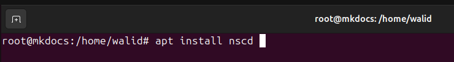
A continuacio instalem aquest paquet:
(sudo) apt install libnss-ldap
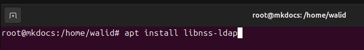
En la configuracio que es mostra al instalar els paquets, escriurem de primer la IP del servidor del domini:
Introduim el nom del domini:
Escollim la versio mes nova disponible de LDAP:
Acceptem la configuracio per defecte dels seguents parametres:
Introduim el usuari administrador del domini:
Introduim la contrasenya de l'administrador:
A continuacio descarguem el seguent paquet:
(sudo) apt install libpam-ldap
Configuracio d'arxius del sistema
Modificarem el seguent arxiu:
/etc/nsswitch.conf
Afegint ldap a cada linea que es mostra:
passwd: ldap compat files systemd sss
group: ldap compat files systemd sss
shadow: ldap compat files systemd sss
gshadow: ldap compat files systemd
Seguidament modificarem el seguent fitxer, a partir de ubuntu 24 aquest ja esta implementat de forma nativa:
/etc/pam.d/common-passsword
Haurem d'afegir la seguent linea en la zona indicada:
use_authtok

A continuacio, modifiquem el seguent fitxer:
/etc/pam.d/common-session
Afegirem la seguent linea de configuracio:
session optional pam_mkhomedir.so skel=/etc/skel umask=077
Per ultim, modifiquem el seguent fitxer:
/usr/share/lightdm/lightdm.conf.d/50-ubuntu.conf
Afegirem la seguent linea de configuracio:
greeter-show-manual-login=true
Comprovacions
Despres de les configuracions, podrem comprovar si estem conectats als domini buscant els usuaris dintre del nostre sistema.
Per fer-ho utilitzem la seguent comanda i filtrem pels usuaris del domini:
(sudo) getent passwd
Si apareixen en el sistema, tambe hauriem de poder connectar-nos al usuari.
Reconfigurar
Si al comprovar no funciona o al configurar hem realitzat un error, podem reconfigurar les configuracions del principi amb la seguent comanda:
(sudo) dpkg-reconfigure ldap-auth-config
Note
Sol es mostren les captures diferents de la configuracio inicial
Donem l'administrament de LDAP a debconf:
Acceptem i seleccionem la encriptacio md5 per a les contrasenyes:
Comandes varies
Cerca
Per cercar dintre del registres de LDAP amb el client, utilitzem la seguent comanda:
ldapsearch -xLLL -b "dc=[nom domini],dc=[nom domini]" [opcions de cerca]
Les opcions especificades indiquen el seguent:
- x: utilitza l'autentificacio simple en canvi de SASL
- LLL: formateja la sortida de la informacio a una mes neta i entenedora
- b: indica la base de busqueda, en aquest cas el nostre domini
Note
Si al fer la cerca surt un error de mala conexio com aquest:
ldap_sasl_bind(SIMPLE): Can't contact LDAP server (-1)
Es pot solucionar afegint el seguent parametre a la comanda anterior:
ldapsearch -xLLL -H [ip del servidor domini]:389 -b "dc=[nom domini],dc=[nom domini]" [opcions de cerca]
Exemples
Cercar quants UO hi han, el numero donat s'ha de dividir entre 2:
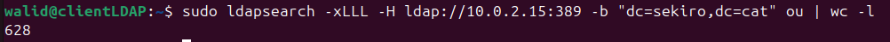
ldapsearch -xLLL -b "dc=[nom domini],dc=[nom domini]" ou | wc -l
Cercar quants usuaris hi han, el numero donat s'ha de dividir entre 2:
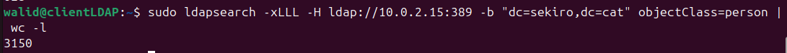
ldapsearch -xLLL -b "dc=[nom domini],dc=[nom domini]" objectClass=person | wc -l
En quins grups esta l'usuari kvaughan:
ldapsearch -xLLL -b "dc=[nom domini],dc=[nom domini]" "(&(objectClass=groupOfUniqueNames)(uniquemember=uid=kvaughan,ou=People,dc=[nom domini],dc=[nom domini]))" cn
Quants grups esta l'usuari kvaughan, el numero donat s'ha de dividir entre 3:
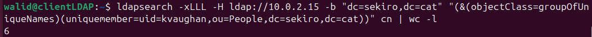
ldapsearch -xLLL -b "dc=[nom domini],dc=[nom domini]" "(&(objectClass=groupOfUniqueNames)(uniquemember=uid=kvaughan,ou=People,dc=[nom domini],dc=[nom domini]))" cn | wc -l
Quants grups hi han dintre de la UO Groups, el numero donat s'ha de dividir entre 2 i restar 1:
ldapsearch -xLLL -H ldap:// 10.0.2.15 -b "ou=Groups,dc=[nom domini],dc=[nom domini]" dn | wc -l
Mostrar tots els usuaris de la UO People que comencin per k i tambe estiguin dintre de la UO Human Resources:
ldapsearch -x -LLL -b "ou=People,dc=[nom domini],dc=[nom domini]" "(&(uid=k*)(ou=Human Resources))" dn
Mostrar numero total d'usuaris amb uidNumber entre 1010 i 1030, el numero donat s'ha de dividir entre 2:
ldapsearch -x -LLL -b "dc=[nom domini],dc=[nom domini]" "(&(uidNumber>=1010)(uidNumber<=1030))" dn | wc -l
Mostrar numero total d'usuaris on el seu telefon acabi en 2 o el seu cognom en una n, el numero donat s'ha de dividir entre 2:
ldapsearch -x -LLL -b "dc=[nom domini],dc=[nom domini]" "(|(telephoneNumber=*2)(sn=*n))" dn | wc -l
Afegir
Per afegir registres al domini LDAP desde un client tenim dues formes de fer-ho:
- Afegir a partir d'un fitxer ldif convencional
- Afegir a partir d'un ldif utilitzant la comanda de modificacio
Per afegir el registre de forma ordinaria, utilitzem la seguent comanda:
ldapadd -x -D "cn=[usuari administrador],dc=[nom de domini],dc=[nom de domini]" -W -f [fitxer.ldif]
Les opcions especificades indiquen el seguent:
- x: utilitza l'autentificacio simple en canvi de la SASL
- D: especifica el usuari i domini el qual es realitza l'accio
- W: demana la contrasenya de forma interactiva
- f: especifica l'arxiu ldif
Per afegir un usuari a partir de la comanda de modificacio, primer haurem de configurar l'arxiu ldif d'aquesta forma:
dn: [dn]
changetype: add
...
Per aplicar l'arxiu, utilitzem la seguent comanda:
ldapmodify -x -D "cn=[usuari administrador],dc=[nom de domini],dc=[nom de domini]" -W -f [fitxer.ldif]
Les opcions especificades indiquen el mateix que la comanda anterior.
Exemples
Afegir una UO amb el nom de asix:
Escrivim els atributs de la UO asix en el arxiu ldif.
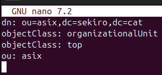
Apliquem la comanda ldapadd per afegir el UO
Comprovem que s'ha afegit correctament.
Afegir un usuari amb informacio adicional:
Afegim l'usuari amb tota la informacio dintre del arxiu ldif. En aquest cas la informacio adicional es: - facsimileTelephoneNumber - telephoneNumber - mail
Apliquem la configuracio amb la comanda.
Comprovem que s'ha afegit correctament.
Afegir un grup amb usuaris:
Creem el ldif amb el nou usuari i els membres que contindra.
Afegim el nou grup.
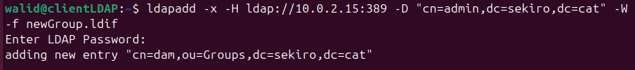
Comprovem que el grup s'ha afegit de forma correcta.
Eliminar
Per eliminar registres de LDAP hi han dues formes:
- Eliminar amb una comanda
- Eliminar utilitzant un arxiu ldif i la comanda de modificacio
Per a eliminar el registre amb una comanda:
ldapdelete -x -D "cn=[usuari administrador],dc=[nom domini],dc=[nom domini]" -W "[dn del registre]"
Per a eliminar el registre amb un arxiu, escrivim el seguent en l'arxiu:
dn: [dn del registre]
changetype: delete
I utilitzem la seguent comanda:
ldapmodify -x -D "cn=[usuari admin],dc=[nom domini],dc=[nom domini]" -W -f [arxiu.ldif]
Exemples
Eliminar la UO People:
Modificar
Hi han 4 caracteristiques dels registres que es poden modificar:
- Afegint atributs
- Canviant atributs
- Eliminant atributs
- Canviant el dn
La comanda, que val per a totes les modificacions, es la seguent:
ldapmodify -x -D "cn=[usuari admin],dc=[nom domini],dc=[nom domini]" -W -f [arxiu.ldif]
Per fer-ho necesitem un arxiu .ldif amb la seguent estructura:
dn: [dn del registre]
changetype: modify
...
Per a afegir atributs, afegim les seguents linees al arxiu:
add: [atribut]
[atribut]: [especificacions del atribut]
Per modificar atributs, afegim les seguents linees al arxiu:
replace: [atribut]
[atribut]: [especificacions del atribut]
Per eliminar atributs, afegim les seguents linees al arxiu:
delete: [atribut]
Per modificar el dn, utilitzem la seguent estructura:
dn: [dn del registre]
changetype: modrdn
...
Per modificar solament el cn, afegim les seguents linees al arxiu:
newrdn: cn=[nou cn]
deleteoldrdn: 1
Si tambe volem modificar el UO o domini, afegim les seguents linees al arxiu:
newsuperior: [nou ou o domini]
Exemples
Eliminar els atributs roomnumber i homeDirectory del usuari ejohnoson:
Afegim els atributs a eliminar en el arxiu ldif.
Utilitzem la comanda ldapmodify per aplicar la modifiacio.
Comprovem que s'han eliminat els atributs.
Canviar 3 usuaris de People a ASIX:
Afegim els usuaris que volem canviar de UO dintre del arxiu ldif.
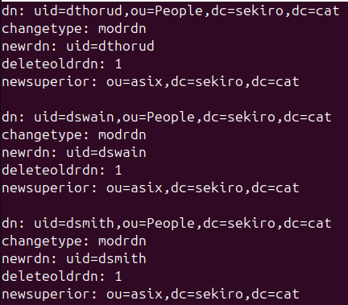
Apliquem la comanda.
Comprovem que estan dintre del UO de asix.
Modificar el uid de hmiller a hamiller:
Afegim el nou uid que volem ficar al usuari en un arxiu ldif.
Apliquem la comanda.
Comprovem que s'ha modificat el uid.
Afegir dos atributs mes al usuari walid:
Afegim els atributs gecos i description.
Apliquem els canvis amb la comanda.
Comprovem que els canvis s'han realitzat.
Modificar el correu de jburrell:
Reemplacem el antic correu amb el nou utilitzant el replace.
Apliquem els canvis.
Comprovem que els canvis s'han realitzat correctament.
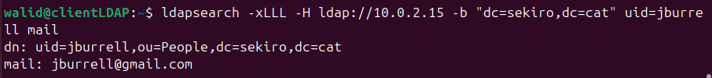
Treure a un membre de un grup:
Eliminem el usuari amb el delete.
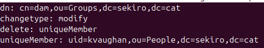
Apliquem el canvi.
Comprovem que l'usuari s'ha tret del grup.
Esborrar un atribut, afegir un altre i modificar un tercer d'un usuari:
Afegim l'atribut, eliminem un altre i modifiquem el tercer dintre del arxiu ldif.
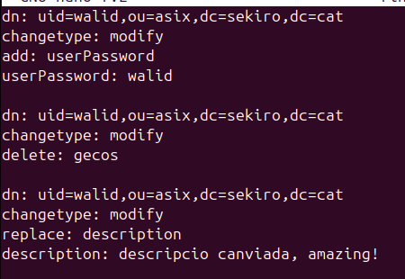
Apliquem els canvis.
Comprovem que els canvis s'han realitzat correctament.
Entorn Grafic
En el client LDAP es poden instalar entorns grafics per a facilitar la gestio d'aquest, els mes populars son:
- Apache Directory Studio
- JXplorer
- Phpldapadmin
- LDAP Account Manager
En aquesta documentacio, utilitzarem Apache Directory Studio
Instalacio
Per instalar Apache Directory Studio, haurem d'entrar al seguent enllaç i descargar el paquet.
Escollim el SO, en aquest cas Linux.
Cliquem el enllaç i ens descargara el paquet.
Extraem el paquet, en aquest cas en l'entorn grafic.
En la propia carpeta creada, es trobara el ApacheStudio, el qual si l'executem s'inicia el programa.
Note
La majoria d'errors al iniciar el Apache Studio es la falta del JVE (Java Virtual Envoirenment) i/o JDK (Java Developer Kit), els podem instalar amb les seguents comandes:
(sudo) apt install default-jve
(sudo)apt install default-jdk
Configuracio
Dintre del Apache Studio, en l'apartat LDAP cliquem a una nova conexió.
En els primers parametres posem el nom que volem a la conexio i la IP del servidor domini.
Seguidament, escollim l'autentificacio simple i escrivim el administrador i domini que volem connectar-nos juntament amb la contrasenya del administrador.
Una vegada autenticats, podem escollir el domini LDAP en la part inferior esquerra.
En l'apartat DIT, podem veure l'estructura del LDAP de forma senzilla.
Si escollim algun registre, en la part dreta es mostrara les caracteristiques d'aquest.
Afegir Registres
Des de 0
Per afegir un nou registre, fem click dret al grup o estructura que serà part -> new entry.
Afegirem la entrada de forma manual.
En aquest apartat, posem els object class del registre. En aquest cas es un grup.
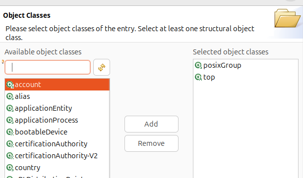
En aquest apartat, afegim o eliminem els RDS necessaris, en aquest cas solament necessitem el cn.
Com tots els grups necessiten un gidNumber (i al ser l'unic atribut afegit) haurem d'assignar-lo.
Finalment, podem veure els atributs del registre i modificar-los segons el convenient.
Finalment, podem veure que el registre s'ha afegit de forma satisfactoria.
Utilitzant plantilles
Per afegir registres utilitzant plantilles, creem una nova entrada però utilitzant una entrada existent com a plantilla.
Escollim la entrada per a utilitzar-la com a plantilla.
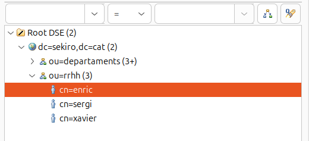
Al ser iguals, no fa falta canviar els object class. En altres casos podria ser necessaris.
Canviem el cn del registre al nou
I canviem els atributs convenients al nou registre.
Finalment, podem veure que el registre s'ha afegit de forma satisfactoria.
Comprovacions
Per a fer les comprovacions, s'ha creat un usuari kike.
A la maquina client, entrem amb un nou usuari, en aquest cas Kike.
Com podem veure, s'ha autenticat de forma satisfactoria ja que s'esta creant la seva carpeta d'usuari.
Finalment, hem autenticat a Kike de forma grafica.

Comparticio de recursos
NFS
NFS (Network File System) es un protocol que permet compartir carpetes i fitxers per la xarxa.
NFS comparteix recursos per host. Es pot autenticar mitjansant usuaris pero s'hauria d'utilitzar juntament amb Kerberos
Configuracio servidor
En el servidor, instalarem el paquet necessari, el qual es el seguent:
(sudo) apt install nfs-kernel-server
Creem la carpeta el qual es compartira. Per no tindre problemes amb permisos, de moment el propietari de la carpeta es ningu i amb tots els permisos a tothom.
Seguidament, en el fitxer /etc/exports afegim les seguents linees:
[carpeta a compartir] [xarxa]([permisos],[sincronitzacio],[seguretat],[rendiment])
Les opcions a ficar son les seguents:
- Xarxa: es pot indicar la xarxa que pot accedir. (*) indica totes les xarxes, es pot ficar IPs d'equips individuals (192.168.2.24) o xarxes (192.168.2.0/24).
- Permisos: es posen els permisos de la carpeta han de estar alineats amb els del sistema. (ro) indica solament lectura. (rw) indica lectura i escriptura.
- Sincronitzacio: indica quina sincronitzacio amb el servidor dona. (sync) escriu al disc del servidor i despres respon. (async) respon i despres escriu al disc del servidor.
- Seguretat: s'indica la seguretat a la carpeta. (root_squash) indica que el root dels clients son usuaris no privilegiats a la carpeta. (no_root_squash) permet que el root del client tingui privilegis a la carpeta. (all_squash) mapeja tots els usuaris com a nobody nogroup.
- Rendiment: indica el rendiment en el subdirectoris. (no_subtree_check) no verifica permisos dels subdirectoris. (subtree_check) verifica els permisos dels subdirectoris.
Finalment, reiniciem el servei amb la seguent comanda:
(sudo) systemctl restart nfs-kernel-server
Configuracio Clients
Windows
En Windows, anem al panel de control -> Programes i Caracteristiques. I activem una caracteristica de Windows.
Afegim la caracteristica "Serveis per a NFS".
Finalment, si busquem per la xarxa (per exemple ficant la direccio IP del servidor a la barra de busqueda de fitxers) podrem accedir a la carpeta compartida.
Podem comprovar que dintre de la carpeta compartida podem crear fitxers, en aquest cas s'ha creat un fitxer anomenat Wiindows.txt.
Ubuntu
Primer, instalem el paquet necessari, el qual es el seguent:
(sudo) apt install nfs-common rpcbind
Seguidament creem una carpeta el qual apuntara a la carpeta compartida.
Li fiquem los mateixos permisos que la compartida i la montem amb mount.
En aquest cas al montar s'haura de posar la direccio IP i ruta de la carpeta.
(sudo) mount [IP]:[ruta carpeta] [carpeta local]
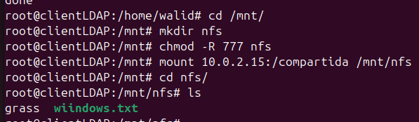
Finalment, podem comprovar que el client Ubuntu pot accedir i crear fitxers en la carpeta compartida, en aquest cas a creat un fitxer anoment clientUbuntu.

Samba
Samba comparteix recursos per usuari que s'ha de autenticar. Es pot configurar juntament amb LDAP.
Els usuaris que no estiguin creats dintre de Samba no poden accedir ni autenticar-se.
Tambe permet la comparticio de mes recursos a part de carpetes i fitxers, com per exemple impresores.
Configuracio Servidor
Primer de tot, instalarem els paquets necessaris amb la seguent comanda:
(sudo) apt install samba
Seguidament, creem una carpeta la qual sera la que es compartira. Fiquem com a propietari nobody nogroup amb tots els permisos ficats.
En l'arxiu seguent, afegim les caracteristiques de la carpeta a compartir:
(nano) /etc/samba/smb.conf
[nom visible en xarxa]
path=[ruta absoluta de la carpeta]
guest ok = [Permet l'acces sense usuari (yes/no)]
directory mask = [Permisos per als nous directoris (ex: 0775)]
create mask = [Permisos per als nous fitxers (ex: 0664)]
browseable = [Si el recurs es visible a la xarxa (yes/no)]
read list = [Usuaris o grups amb permis de lectura]
write list = [Usuaris o grups amb permis d'escriptura]
invalid users = [Llista d'usuaris als quals es denega l'acces]
Note
Es poden afegir usuaris escribint el nom directament, tambe es pot afegir grups posant un @ al principi del nom (@dam).
Reiniciem el servei amb la seguent comanda:
(sudo) systemctl restart smbd nmbd
Seguidament, afegim els usuaris que es podran autenticar dintre del sistema amb la seguent comanda:
(sudo) useradd -M -s /sbin/nologin [usuari]
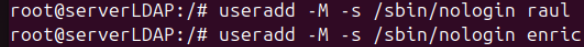
Podem comprovar que s'han afegit els usuaris correctament amb la seguent comanda:
(sudo) tail [- (usuaris afegits)] /etc/passwd
En aquest cas, hem afegit un grup. El procediment continua sent el mateix.
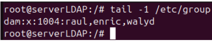
Finalment, posarem una contrasenya per a cadascun dels usuaris amb la seguent comanda:
(sudo) smbpasswd -a [usuari]
Configuracio Clients
Primer de tot, instalarem el paquet samba amb la seguent comanda:
(sudo) apt install smbclient
En Ubuntu Desktop, podem connectar-nos al servidor mitjansant l'aplicacio fitxers -> altres ubicacions i escriure l'adresa del servidor i carpeta que volem accedir.
smb://[ip servidor]/[carpeta]/
Note
Les seguents proves s'han fet a un servidor on es deixaba accedir en format anonim sense poder fer canvis.
Seguidament, ens demanara autentificar-nos. Com a primera prova, ens autenticarem com anonims.
Com no tenim permisos per a modificar o crear en la carpeta, no ens deixara.
Si volem autenticar-nos com a usuari, seria de la seguent forma:
En aquest cas, si que ens deixa crear o modificar dintre de la carpeta.
Finalment, podem comprovar en el servidor que el fitxer s'ha creat.
LDAP
Configuracio Servidor
Primer, instalarem el seguent paquet:
(sudo) apt install nfs-kernel-server
Creem la carpeta que volem compartir el qual tindra nobody nogroup i tots els permisos ficats:

Seguidament, entrarem en el seguent fitxer de configuracio:
(sudo) nano /etc/exports
Afegirem la seguent linea per a poder compartir la carpeta:
[carpeta] *(rw,sync,no_root_squash,no_subtree_check)
Finalment, reinciem el servei per a actualitzar els canvis:
(sudo) systemctl restart nfs-kernel-server
Configuracio Clients
En el client de LDAP, instalem el seguent paquet:
(sudo) apt install nfs-common rpcbind
Seguidament, creem la carpeta local on es connectara al servidor:
A continuacio, modificarem el seguent fitxer:
(sudo) nano /etc/fstab
En el fitxer, afegirem la seguent linea de configuracio:
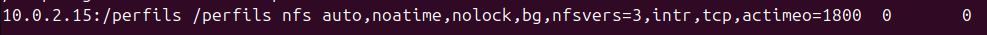
[ip servidor]:[ruta absoluta carpeta] [ruta absoluta carpeta local] nfs auto,noatime,nolock,bg,nfsvers=3,intr,tcp,actimeo=1800 0 0
Podem comprovar reiniciant el client i creant o eliminant fitxers en la carpeta que esta connectada al sevidor.
Usuaris Mobils amb LDAP
Per a crear usuairs mobils, primer haurem de seguir els passos de comparticio de recursos mitjançant NFS i LDAP.
Una vegada configurat, creem un usuari on el directori home estigui dintre de la carpeta compartida:
Afegim l'usuari:
En l'ordinador client. Podem connectar-nos a l'usuari i crear un fitxer de prova.
En la carpeta del servidor, podem comprovar que l'usuari te el directori home en el servidor i crea els fitxers d'aquella carpeta en el servidor.
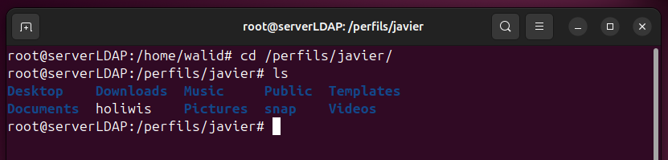